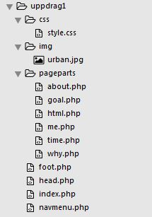

Uppdrag 1 - tips
Några korta steg till hur jag löste kodningen av uppdrag 1 :
1. Skapa mappstruktur
Till denna lilla site behövdes ingen större mappstruktur. En enkel, för att vänja sig vid hur man brukar organisera saker inför större projekt, är dock på sin plats. Följande bild illustrerar en vettig struktur:

2. Skapa en grundsida
Som jag förklarat och som bilden ovan visar så delade jag upp grundsidan i fem delar: index.php, head.php, navmenu.php, inneåll foot.php
Där innehåll är olika filer som laddas utifrån vilken navigation som användaren har klickat på. En fil för varje innehåll. Filera innehåller ungefär följande:
head.php
Vanlig html-kod (från doctype ner till start-body-taggen).foot.php
Vanlig html-kod (från slut-body-taggen till slut-html-taggen).navmenu.php
Vanlig html-kod (innehåller som du kanske förstår navigationsmenyn, dvs ul,li och a-taggar).innehåll
Vanlig html-kod från olika filer (filerna är tänkta att ligga i mappen pageparts).index.php
php-kod som laddar olika filer. Om du vill ha hjälp med att komma igång med php läs då här.
3. Skapa navigationsmeny
En guide för hur du skapar den finns som sagt här.
4. Skapa respektive sida.
Mycket att skriva blir det...
Kort PHP-guide
Installation
För jobba med PHP behöver man tre saker:
- en lokal utvecklingsmiljö (xampp)
- en publik webbserver med php-stöd (skelamp)
- ett ftp-program (filezilla).
Ladda ner och installera xampp samt filezilla.
Konfiguerar sedan filezilla så att den kan ansluta till skelamp. Fråga Urban om användarnamn och lösenord.
Utveckla dina php-filer (testa dem genom att lägga dem i htdocs-mappen och skriva localhost).
Överför sedan filerna till servern.
include
Om man delar upp en webbsida i flera filer (som jag föreslagit ovan) så behöver man ju få ihop den igen.
Det kan enkelt göras med php-kommandot include. Så här enkelt är det: